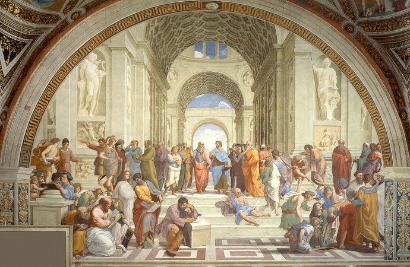

Other Areas of Study
Within philosophy, there are many other subfields beyond those mentioned on the other pages of this website. I have personally done significant work in philosophy of action, or the study of what an action is, what precedes an action, and how that pertains to decision and judgment-making. I also wrote my Master's thesis on the theory of responsibility, which is the study of how we attribute responsibility to others and ourselves. Others have worked in areas such as philosophy of mind, which deals with problems like mind-body dualism and the like. There's the philosophy of aesthetics, or the theoretical treatment of beauty and artistic preference, and political philosophy, which includes Thomas Hobbes' discussion about the State of Nature, social and political contracts, and sovereignty (among many other things). Philosophy of language, which explores the nature, the origins, and the use of language, is another major subfield in the study of philosophy.
When it comes down to it, the scope and history of philosophical study is deep and confusing, much like this game of philosophy soccer.